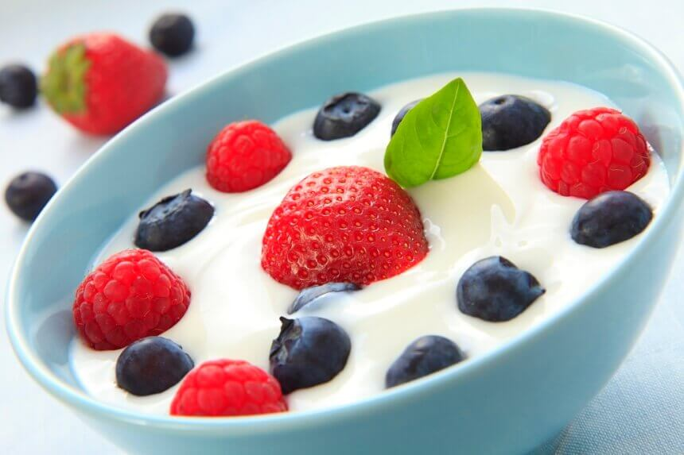

Zdravi Recepti za Vaše Zdravlje
Pronađite ukusne i zdrave recepte koji će vam pomoći u postizanju vaših ciljeva.
Voćni Jogurt
Ovaj jogurt je pun vitamina i minerala, savršen za početak dana. Savršen obrok.
Avokado Tost
Avokado tost je ukusan i zdrav obrok, bogat vlaknima i zdravim mastima. Idealan za doručak ili užinu!

Jos zdravih recepata mozete pogledati na stranici
Kliknite ovdje!